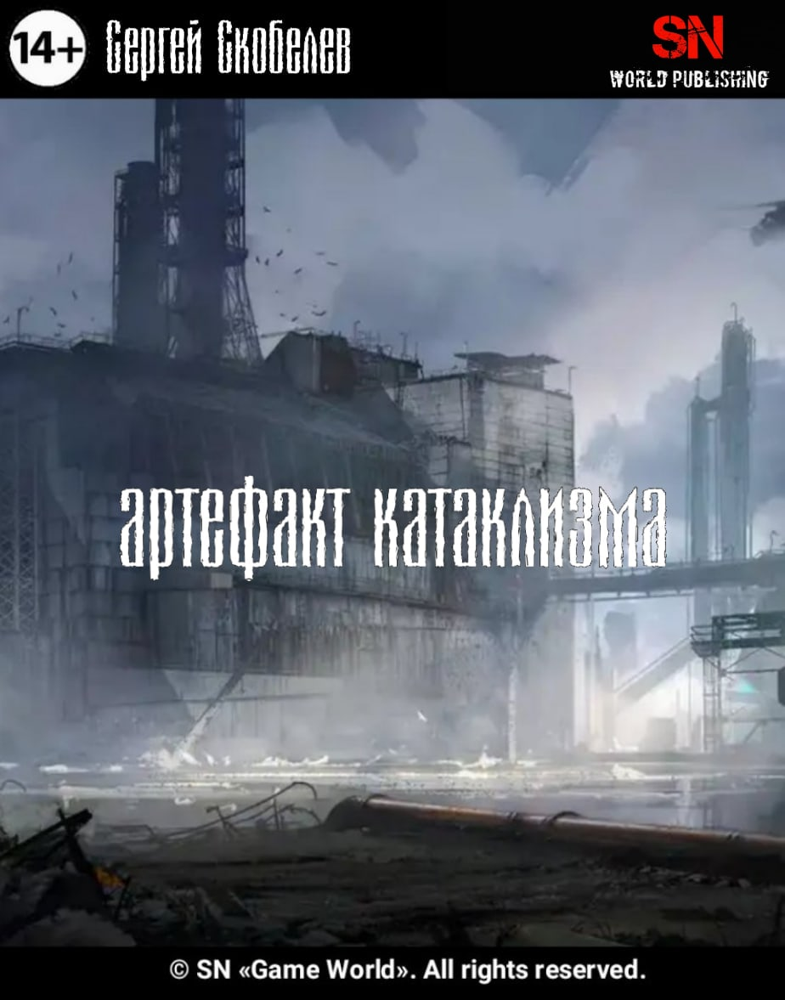

S.T.A.L.K.E.R. «Артефакт Катаклизма»

Описание
Самые крупные группировки Зоны устремили свой взгляд на Припять. Образовавшаяся там аномалия таит в себе не менее загадочный артефакт. Мало кто знает, что он способен не только озолотить своего обладателя, но и перевернуть судьбу целого мира. «Долг» и «Свобода» начинают новую войну за право обладания тайными путями в город, наёмники убивают всех, способных им помешать, а сталкеры сбиваются в малые группы, желая первыми найти таинственный артефакт. Тем временем могущественная секретная организация засылает в Зону ударный отряд, цель которого – добраться до артефакта раньше остальных и, более того, заполучить его. По случайным обстоятельствам в этот жестокий рейд попадает Беркут – один из сотни обычных сталкеров, промышляющих в Зоне. У него нет выбора, нет пути отхода. И нет причин отказаться.Против отряда выставлены самые сильные противники: кровожадные мутанты, опасные аномалии, бойцы различных группировок, в том числе и сектанты из враждебного клана «Монолит».Беркут – храбрый человек и способный боец. Он – сталкер. Настоящий, не бросающий своих друзей на поживу смерти, готовый прикрыть спину и поделиться последней аптечкой. Но сможет ли он выстоять это испытание? Не сгинет ли во мраке опасности, навеянной на отряд?Будущее всего живого по обеим сторонам Кордона зависит от слаженной работы элитного подразделения. Но порой бывают случаи, когда одной боевой подготовки или сталкерских навыков просто недостаточно. Тогда в бой вступают холодная ярость и точный расчёт.
Информация
Оценка пользователей - 4,5 ⭐.
Автор - Сергей Скобелев.
Правооблодатель - Сергей Скобелев.
Издательство - SN World Publishing.
Размер файла: ***Мб.
Формат файла: [*Txt].
Дата Выхода: **.**.****.
Скачать [Демо]
Купить
...